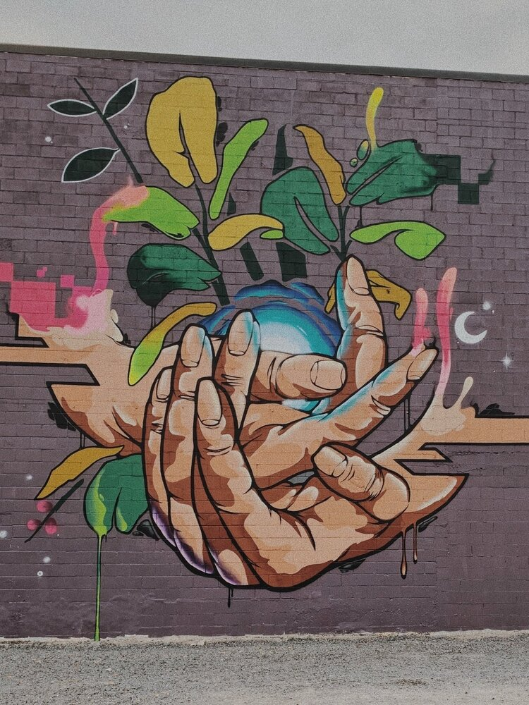

01 / CRO
OnKey
An AI-native knowledge system for frontline workers. It closes the loop between the home office and the floor, pushing what people need to know, answering what they ask, and turning those questions into operational insights.
OnKey →My mission: a world more connected, productive, and joyful
I help organizations navigate inflection points — the moments when what got you here won't get you where you're going.
30 years being on the edge of "what's next": RollingStone.com, LinkedIn's first certified consulting partner in North America, leadership & communications consulting, a company built and sold. I tell the truth about what's broken, treat people like people, and ship the fix.
Full time, fractional, & advisory
01 / CRO
An AI-native knowledge system for frontline workers. It closes the loop between the home office and the floor, pushing what people need to know, answering what they ask, and turning those questions into operational insights.
OnKey →02 / CCO
Patent-pending modular, DC-native behind-the-meter power. It eliminates the diesel generator and gives a site a real path to renewables—which makes it the answer to the constraint the AI buildout keeps running into.
INGENEV →03 / The playbook
My GTM method, written down: how dandelioning spreads, why watermelon metrics read green while the number dies, where the vapor walls are, and the 90-day intervention that clears them. Take it and run it yourself.
Get the playbook →04 / Advisory & investing
A few board seats &/or fractional engagements a year, focused on mid-market and PE-backed, usually pre-category or post-plateau, and looking at how to leverage AI. I built VerdictAEO for professionals whose referrals now get vetted by an LLM rather than a Google-using human.
Start a conversation →The writing · seiden.substack.com
Short, honest, occasionally uncomfortable looks back at moments that defined me... usually not for the reason I expected. Read one and see if you see yourself.
I see things quickly.
I'm typically twelve to twenty-four months early. That's cost me as often as it's paid, but it's why I'm useful when there's no best practice to copy, when the market hasn't named the thing yet, or when the old playbook is quietly failing while the dashboard still reads green.
My approach is simple but runs deep: diagnose fast and honestly, say the true thing out loud, keep the humans intact. The numbers follow.
In 2018, my daughter Elle died after a multi-year battle with Complex Regional Pain Syndrome (CRPS). I've written about the epiphany that followed—my moment of joy—and how it became the True North that now runs through everything I do, from my work to my frameworks to my speaking.
with truth + empathy,
Jason

What's stuck? What does your team need to know? I'll do what I can to connect you with someone who can help, even if it's me.